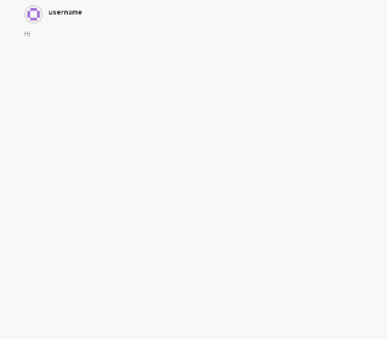
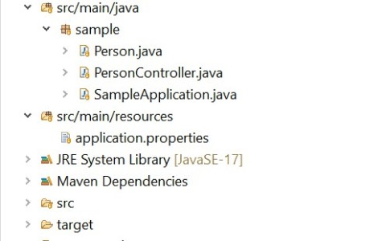

Articles on DZone
7 articles

First published on DZone
Swagger UI in a BFF World: Making Swagger UI Work Natively With BFF Architectures
Feb 24, 2026
Introduces a Swagger UI plugin that integrates natively with BFFs using the official extension mechanism — no proxying, no spec transformation. First fully working approach of its kind.

First published on DZone
Logging MCP Protocol When Using stdio, Part II
Aug 18, 2025
A deep dive into logging the MCP JSON protocol over stdio, with a look at its key components and their nuances.
First published on DZone
Logging MCP Protocol When Using stdio, Part I
Aug 18, 2025
Learn different ways to log the MCP JSON protocol over stdio, with an intro to MCP and a deep dive into its key components and their nuances.
First published on DZone
Extending Swagger and Springdoc Open API
Updated Apr 17, 2024
Third in a three-part series. Explores Swagger schema extensions to document constraints that would otherwise remain invisible — including custom validators. Featured on springdoc.org.
👁 53,000+ reads on DZone
First published on DZone
Doing More With Springdoc OpenAPI
Updated Apr 17, 2024
Second in a three-part series. Explores lesser-known concepts in the OpenAPI ecosystem — work here led to a direct contribution to Swagger Core. Featured on springdoc.org.
👁 112,000+ reads on DZone

First published on DZone
OpenAPI 3 Documentation With Spring Boot
Updated Apr 17, 2024
First in a three-part series. Introductory article exploring Spring Boot OpenAPI 3 capabilities. Featured on springdoc.org.
👁 119,000+ reads on DZone
First published on DZone
Using Swagger for Creating a PingFederate Admin API Java Wrapper
Mar 27, 2023
Using Swagger to generate a PingFederate Admin API Java wrapper. Includes a side utility and two sample applications demonstrating Authorization Code Flow.